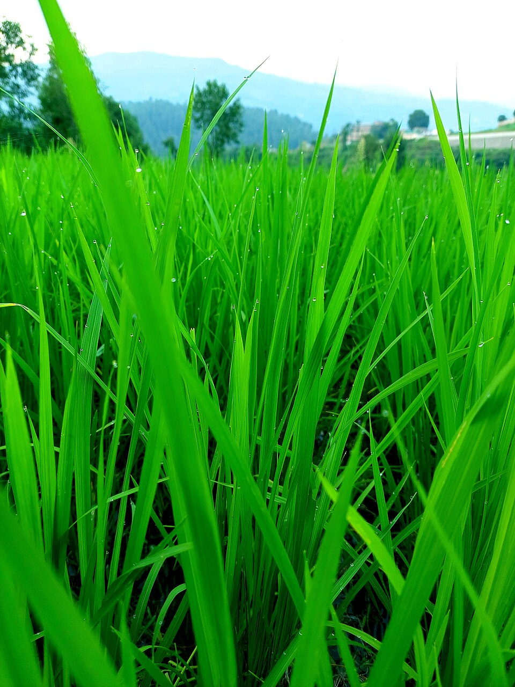
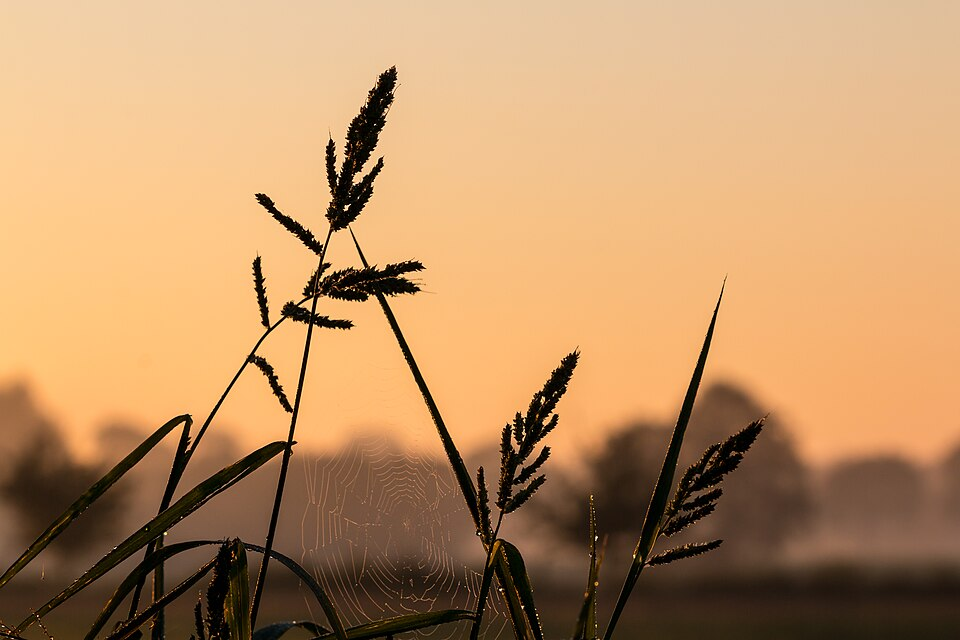
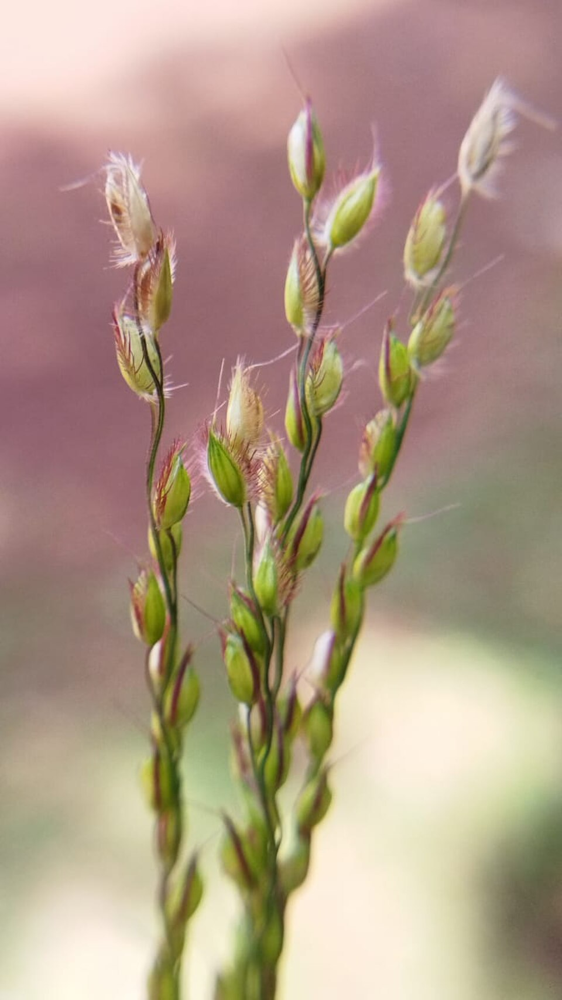
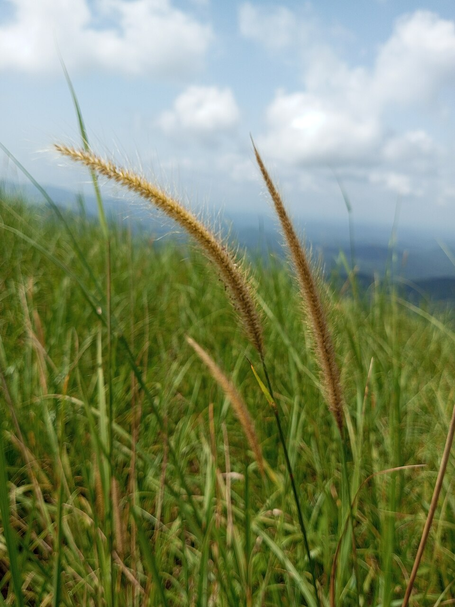
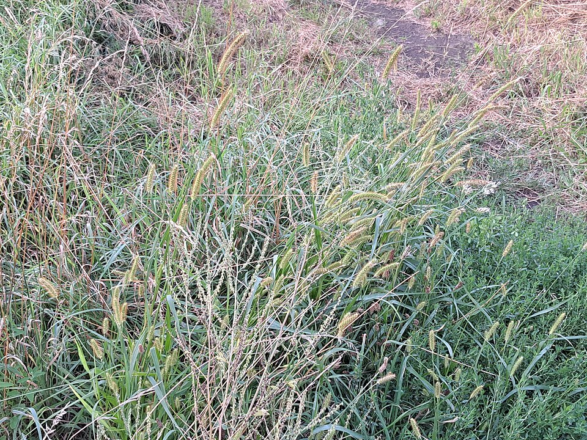
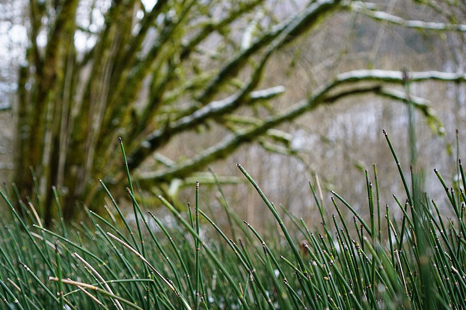
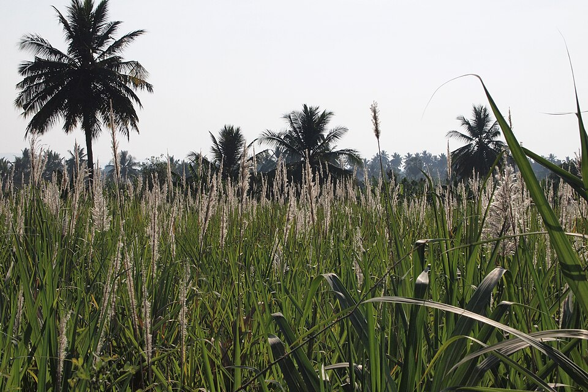
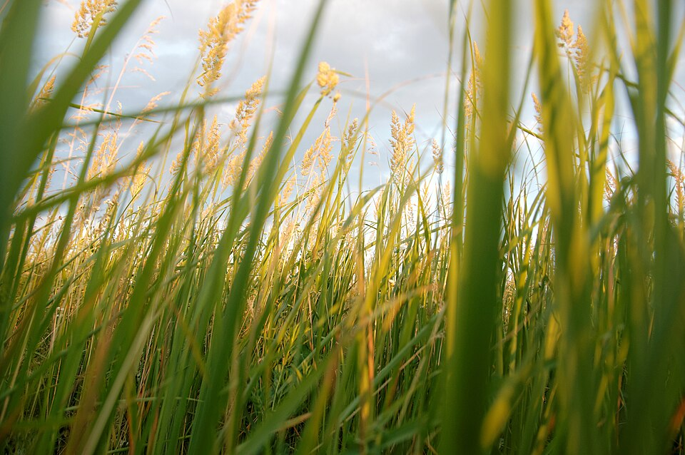
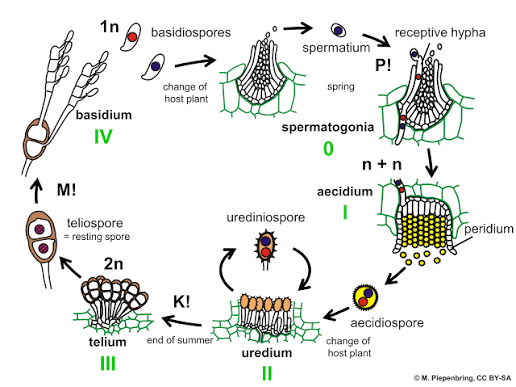
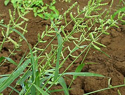

Elles poussent par la base
Une graminée grandit depuis le bas de ses feuilles. Brouter ou tondre ne la tue donc pas : elle repousse, ce qui explique le succès des prairies.
Les reines des prairies, et les plantes qui nous nourrissent.
Plus de 65 millions d'annéesDes forêts de conifères aux grandes étendues d'herbe, la planète a changé de décor. Les graminées sont apparues bien plus tard que les conifères, il y a plus de 65 millions d'années, puis ont recouvert les continents sous forme de prairies, de savanes et de steppes. Aujourd'hui, elles se trouvent dans presque toutes nos assiettes.
Une graminée grandit depuis le bas de ses feuilles. Brouter ou tondre ne la tue donc pas : elle repousse, ce qui explique le succès des prairies.
À elles seules, le blé, le riz et le maïs fournissent environ la moitié des calories consommées par l'humanité.
Oui, le bambou est une graminée ! Certaines espèces poussent de près d'un mètre par jour.
.jpeg)
.jpeg)
.jpeg)










Les graminées se reproduisent principalement grâce aux fleurs regroupées en épillets. Après la pollinisation, généralement assurée par le vent, la fécondation permet la formation de graines. Celles-ci germent dans des conditions favorables pour donner naissance à une nouvelle plante.
